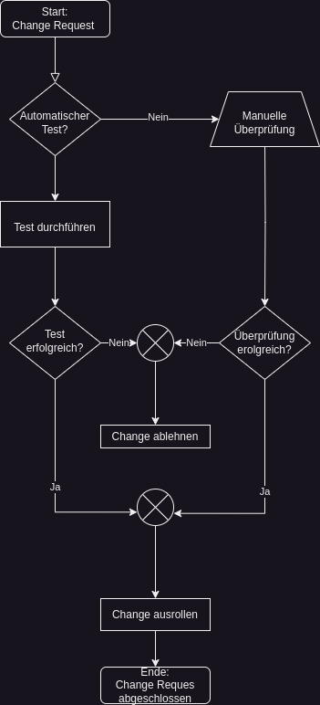
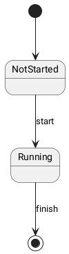
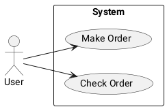
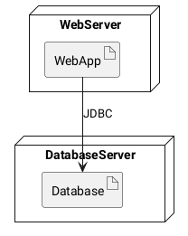
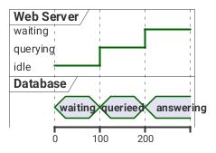

Prozessdokumentation
KOM-ITIL
Sebastian Meisel
Einführung
Die effiziente Dokumentation und Analyse von Geschäftsprozessen ist entscheidend für die Organisationen.
Besonders grafische Werkzeuge, wie in diesem Dokument beschrieben, eignen sich dazu.

EPK
Ein Ereignisgesteuertes Prozesskettendiagramm (EPK) ist eine grafische Darstellungsmethode, die in der Prozessmodellierung und -analyse verwendet wird.
EPKs werden hauptsächlich für die Visualisierung von Geschäftsprozessen eingesetzt und dienen dazu, die logische Abfolge von Ereignissen, Funktionen und Kontrollflüssen in einem Prozess zu veranschaulichen.
Elemente

Beispiel

Abbildung 1: Links: Informationsfluss zwischen Informationsobjekten einer Funktion. Rechts: "Zwei Ergeinisse stoßen eine Funktion an, eine Funktion führt zu zwei Ereignissen."
Programm-Ablauf-Plan (PAP)
Der Programmablaufplan (PAP) ist eine grafische Darstellungsmethode, die häufig in der Prozessdokumentation im Qualitätsmanagement (QM) verwendet wird. Er dient dazu, den Ablauf eines Programms, Prozesses oder einer Sequenz von Operationen darzustellen.

Symbole
UML
Unified Modeling Language (UML) ist eine standardisierte Modellierungssprache, die zur Visualisierung, Spezifikation, Konstruktion und Dokumentation von Software- und anderen Systemen verwendet wird.
Sie bietet eine Reihe von Diagrammtypen, die verschiedene Aspekte eines Systems darstellen können, von seiner Struktur bis hin zu seinem Verhalten.
Diagramm-Typen
Im Qualitätsmanagement sind vor allem das Aktivitätsdiagramm und das Statusdiagramm von großer Bedeutung. Auch Sequenzdiagramm und Use-Case-Diagramm können in diesem Bereich genutzt werden. (Prüfungsrelevant sind auch Klassen- und Objektdiagramm.)
Das Aktivitätsdiagramm ermöglicht es, Prozesse und Abläufe im Detail zu modellieren, wodurch Verbesserungspotenziale identifiziert und effizientere Arbeitsweisen entwickelt werden können.
Aktivitätsdiagramm
Aktivitätsdiagramme beschreiben den Ablauf von Aktivitäten oder Prozessen innerhalb eines Systems. Sie zeigen den Fluss von Aktionen und Entscheidungen, beginnend mit dem Startpunkt bis zum Endpunkt, wobei Verzweigungen und parallele Abläufe dargestellt werden können.
Statusdiagramm
Statusdiagramme, auch Zustandsdiagramme genannt, visualisieren die verschiedenen Zustände, in denen ein Objekt während seines Lebenszyklus existieren kann, sowie die Übergänge zwischen diesen Zuständen. Sie helfen, das Verhalten eines Systems in Abhängigkeit von seinem aktuellen Zustand zu verstehen.

Sequenzdiagramm
Sequenzdiagramme visualisieren den zeitlichen Ablauf von Interaktionen zwischen Objekten in einem System. Sie zeigen die Reihenfolge von Nachrichten, die zwischen den Objekten ausgetauscht werden, um eine bestimmte Funktionalität zu erreichen, und helfen bei der Analyse des Systemverhaltens.

Use-Case-Diagramm
Das Use-Case-Diagramm modelliert die Interaktionen zwischen einem System und seinen Akteuren, indem es die verschiedenen Nutzungsszenarien oder -fälle darstellt. Es zeigt die Funktionalitäten eines Systems aus der Perspektive der Benutzer und wie diese miteinander interagieren.

Klassendiagramm
Klassendiagramme repräsentieren die statische Struktur eines Systems durch die Darstellung von Klassen, Attributen, Methoden und ihren Beziehungen zueinander. Sie zeigen die Bausteine eines Systems sowie deren Eigenschaften und Verbindungen auf abstrakter Ebene.

Objektdiagramm
Objektdiagramme zeigen eine Momentaufnahme von Objekten und ihren Beziehungen zu einem bestimmten Zeitpunkt im Systemablauf. Sie helfen dabei, die Struktur und den Zustand eines Systems zu verstehen und können zur Fehleranalyse und Testplanung eingesetzt werden.
Weitere Diagrammtypen
- Komponentendiagramm
Komponentendiagramme modellieren die physische Struktur eines Systems und zeigen die verschiedenen Komponenten sowie ihre Abhängigkeiten und Beziehungen zueinander. Sie unterstützen die Planung und Implementierung von Softwarearchitekturen durch die Visualisierung von Modulen und deren Zusammenspiel.

- Verteilungsdiagramm
Verteilungsdiagramme modellieren die physische Verteilung von Systemkomponenten und zeigen die Beziehungen zwischen Hardwarekomponenten, Softwarekomponenten und Netzwerken. Sie unterstützen die Planung und Analyse von verteilten Systemarchitekturen.

- Timingdiagramm
Timingdiagramme zeigen den zeitlichen Verlauf von Signalen und Ereignissen innerhalb eines Systems. Sie visualisieren die Reaktionszeiten und Latenzen von Komponenten und helfen bei der Analyse und Optimierung der Systemleistung.

Business Process Modelling and Notation (BPMN)
BPMN ist eine standardisierte grafische Notation zur Darstellung von Geschäftsprozessen in Form von Diagrammen. Es bietet eine gemeinsame Sprache, um Geschäftsprozesse visuell zu modellieren und zu dokumentieren.
Es bietet viele Symbole, was es komplex beim Erlernen macht, dafür lassen sich viele Prozesse so eindeutiger darstellen, als mit anderen Methode.